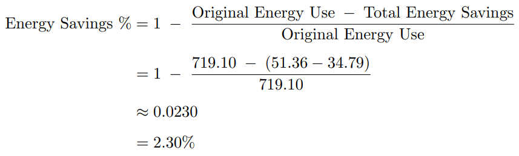

A proposal to redesign the 27th and 28th floors of the Chestnut Residence building to improve energy efficiency
The Chestnut Residence building at 89 Chestnut St., a University of Toronto (UofT) building, has poor energy efficiency on the 27th and 28th floors. The redesign scope is limited to the outdated glass walls from 1971, HVAC, and lighting systems, which have been identified as the major contributors towards energy loss through research and client communication.
Notably, this goes against the UofT’s sustainability goals. That is why our client, Isaias Franco – the manager of building operations – proposed a project to optimize the systems of these floors within a $500,000 budget.
Key stakeholders in this project include the UofT Sustainability Office, government bodies, and many building managers. Their involvement will help solidify UofT’s reputation as the most sustainable university in the world.
The redesign will be carried out on the top two floors of the 28-story building in downtown Toronto. Factors such as temperature, wind, and sunlight are taken into consideration for the service environment. The 27th floor serves as a student gathering space with sofas and vending machines, while the 28th floor is dedicated to quiet study with an open area and bookable study rooms.
The primary function of the redesign is to maintain the indoor environment while offering adjustable heating/cooling, lighting, and insulation. The main objectives are to reduce total energy consumption by 1% monthly and to keep the floor temperature uniform within ±1℃. Constraints include compliance with building codes, acceptable air quality, and meeting prescribed temperature ranges.
The proposed solution is a Heat Recovery Ventilation Integrated Smart Glass System. Selected from 56 potential full solutions and 3 alternatives, this active design uses daylight harvesting systems, electrochromic glass, and smart ventilation with CO₂ monitoring. It effectively adapts to changing conditions while requiring minimal infrastructure changes compared to other alternatives.
The full project details and design recommendations are documented in our final report.
To measure the success of our design, we will use the “Total System Performance Ratio” – a tool built by the city of Seattle. This software simplifies building energy modeling and validates our top objective: to reduce monthly energy consumption by at least 1%.
The evaluation steps include:
Final calculations:
| Chestnut Residence Building | Average Energy Consumption in One Year [GJ] | Average Energy Consumption in One Month [GJ] | Average Energy Consumption per two floors in one month [GJ] |
|---|---|---|---|
| Original Building | 8629.15 | 719.10 | 51.36 |
| Redesigned Building | 5844.75 | 487.06 | 34.79 |

As can be seen, the monthly energy consumption of the Chestnut Residence Building is reduced by 2.30%. This data supports our recommended design!
For further details on the energy usage of the designs, please check the simulation results for both the redesigned and original buildings. Calculations are conducted by EnergyPlus.